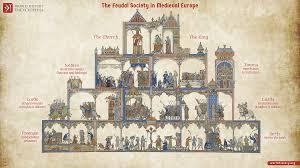

Overview: The medieval period saw kingdoms, castles, and the rise of the church shaping daily life.
Focus: Feudalism organized society through lords, vassals, and serfs, trading land and protection for service.
Feudal Europe was characterized by castles, knights, and a strict social hierarchy. The medieval period saw the rise of powerful monarchies and the spread of Christianity. This era laid the groundwork for modern European nations.
